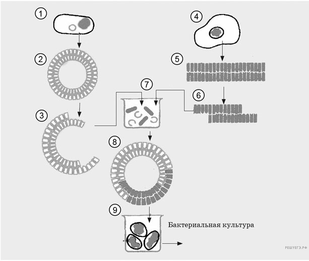

PDF-версии:
PDF-версии: 1. Тип 5 № 45814 
Каким номером на рисунке обозначена клетка, из которой выделяют ген, кодирующий инсулин?
Рассмотрите рисунок и выполните задания 5 и 6.
Схема создания бактериальных клеток, способных в промышленных масштабах синтезировать гормон инсулин
